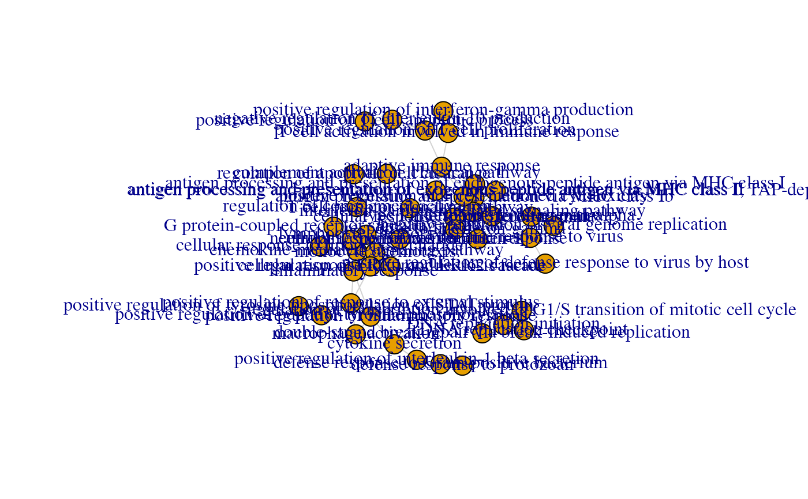

Extract the backbone for the gene-geneset graph, either for the genes or for the genesets
ggs_backbone(
res_enrich,
res_de,
annotation_obj = NULL,
gtl = NULL,
n_gs = 15,
gs_ids = NULL,
bb_on = c("genesets", "features"),
bb_method = c("sdsm", "fdsm", "fixedrow"),
bb_extract_alpha = 0.05,
bb_extract_fwer = c("none", "bonferroni", "holm"),
bb_fullinfo = FALSE,
bb_remove_singletons = TRUE,
color_graph = TRUE,
color_by_geneset = "z_score",
color_by_feature = "log2FoldChange",
...
)A data.frame object, storing the result of the functional
enrichment analysis. See more in the main function, GeneTonic(), to check the
formatting requirements (a minimal set of columns should be present).
A DESeqResults object.
A data.frame object with the feature annotation
information, with at least two columns, gene_id and gene_name.
A GeneTonic-list object, containing in its slots the arguments
specified above: dds, res_de, res_enrich, and annotation_obj - the names
of the list must be specified following the content they are expecting
Integer value, corresponding to the maximal number of gene sets to be included
Character vector, containing a subset of gs_id as they are
available in res_enrich. Lists the gene sets to be included in addition to
the top ones (via n_gs)
A character string, either "genesets" or "features", to specify which entity should be based the backbone graph on.
A character string, referring to the function to be called (
from the backbone package) for computing the backbone of the specified
bipartite graph. Defaults to "sdsm", as recommended in the backbone package.
A numeric value, specifying the significance level to use when detecting the backbone of the network
A character string, defaulting to "none", specifying which method to use for the multiple testing correction for controlling the family-wise error rate
Logical value, determining what will be returned as output:
either a simple ìgraph object with the graph backbone (if set to FALSE),
or a list object containing also the backbone object, and the gene-geneset
graph used for the computation (if TRUE)
Logical value, defines whether to remove or leave in the returned graph the nodes that are not connected to other vertices
Logical value, specifies whether to use information about genesets or features to colorize the nodes, e.g. for this info to be used in interactive versions of the graph
Character string, corresponding to the column in
res_enrich to be used for coloring the nodes if bb_on is set to "genesets".
Defaults to the "z_score", which can be obtained via get_aggrscores()
Character string, corresponding to the column in
res_de to be used for coloring the nodes if bb_on is set to "features".
Defaults to the "log2FoldChange", which should be normally included in a
DESeqResults object.
Additional parameters to be passed internally
According to the bb_fullinfo, either a simple ìgraph object with
the graph backbone, or a named list object containing:
the igraph of the extracted backbone
the backbone object itself
the gene-geneset graph used for the computation
library("macrophage")
library("DESeq2")
library("org.Hs.eg.db")
library("AnnotationDbi")
# dds object
data("gse", package = "macrophage")
dds_macrophage <- DESeqDataSet(gse, design = ~ line + condition)
#> using counts and average transcript lengths from tximeta
rownames(dds_macrophage) <- substr(rownames(dds_macrophage), 1, 15)
dds_macrophage <- estimateSizeFactors(dds_macrophage)
#> using 'avgTxLength' from assays(dds), correcting for library size
# annotation object
anno_df <- data.frame(
gene_id = rownames(dds_macrophage),
gene_name = mapIds(org.Hs.eg.db,
keys = rownames(dds_macrophage),
column = "SYMBOL",
keytype = "ENSEMBL"
),
stringsAsFactors = FALSE,
row.names = rownames(dds_macrophage)
)
#> 'select()' returned 1:many mapping between keys and columns
# res object
data(res_de_macrophage, package = "GeneTonic")
res_de <- res_macrophage_IFNg_vs_naive
# res_enrich object
data(res_enrich_macrophage, package = "GeneTonic")
res_enrich <- shake_topGOtableResult(topgoDE_macrophage_IFNg_vs_naive)
#> Found 500 gene sets in `topGOtableResult` object.
#> Converting for usage in GeneTonic...
res_enrich <- get_aggrscores(res_enrich, res_de, anno_df)
ggs_bbg <- ggs_backbone(res_enrich,
res_de,
anno_df,
n_gs = 50,
bb_on = "genesets",
color_graph = TRUE,
color_by_geneset = "z_score"
)
plot(ggs_bbg)

# if desired, one can also plot the interactive version
visNetwork::visIgraph(ggs_bbg)